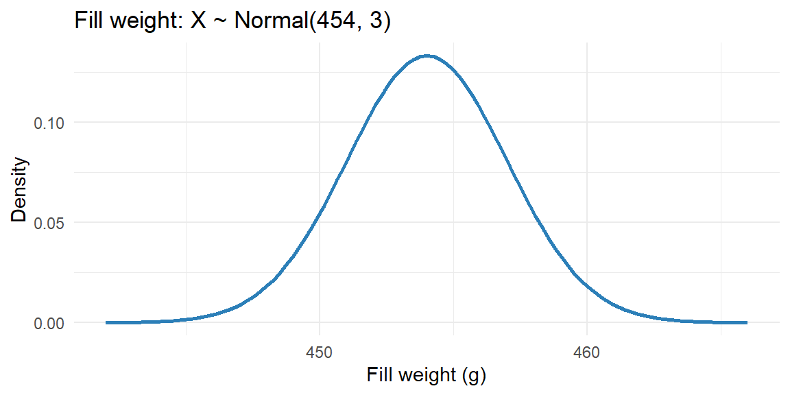

8 Week 3: The Normal Distribution
8.1 Why This Matters
The normal distribution is the single most important distribution in statistics, and nearly everything we do for the rest of this course rests on it in some way: confidence intervals, hypothesis tests, and even forecasting all lean on the normal model, directly or through the Central Limit Theorem we’ll cover next week (the remarkable fact that sample means tend to be approximately normal even when the underlying data aren’t). It shows up constantly in business measurements too: fill weights, transaction amounts, and measurement error are all commonly modeled as normal, at least approximately.
8.2 Shape and Properties
A random variable \(X\) follows a Normal(\(\mu, \sigma\)) distribution (also called Gaussian) if its density is:
- symmetric around its mean \(\mu\),
- bell-shaped, with a single peak, and
- spread out according to its standard deviation \(\sigma\)—a small \(\sigma\) gives a tall, narrow bell; a large \(\sigma\) gives a short, wide one.
Because of the symmetry, \(\text{median} = \text{mode} = \mu\) for any normal distribution. The curve extends in both directions without ever quite touching zero, so technically any value is possible, but values more than a few standard deviations from \(\mu\) have vanishingly small probability.
ExampleExample 3.10: A bottle-filling process
A beverage company’s filling machine dispenses coffee into bags targeted at 454 grams (16 oz), and the actual fill weight varies slightly due to ordinary mechanical variation. Historical data shows fill weight is well described by \(X \sim \text{Normal}(454, 3)\), a mean of 454g and a standard deviation of 3g.
You do not need to memorize or work directly with the normal density formula to use the normal model. R, Excel, and the rules below do the computational work. What matters is recognizing the shape and knowing how to use \(\mu\) and \(\sigma\).
8.3 The Empirical Rule
For any bell-shaped distribution (including the normal distribution), the same three approximate percentages hold, regardless of \(\mu\) and \(\sigma\):
- About 68% of values fall within 1 standard deviation of the mean: \((\mu - \sigma, \mu + \sigma)\)
- About 95% of values fall within 2 standard deviations: \((\mu - 2\sigma, \mu + 2\sigma)\)
- About 99.7% of values fall within 3 standard deviations: \((\mu - 3\sigma, \mu + 3\sigma)\)
ExampleExample 3.11: Setting a quality-control range
Using the filling process from Example 3.10 (\(\mu=454\), \(\sigma=3\)), about 95% of bags should weigh between \[ 454 - 2(3) = 448 \text{ grams} \qquad \text{and} \qquad 454 + 2(3) = 460 \text{ grams} \] A quality-control team could use this range as a first-pass check: bags outside 448–460g are unusual enough (happening only about 5% of the time under normal operation) to be worth flagging for a closer look, while bags inside that range reflect ordinary process variation, not a problem.
8.4 Standardizing: Z-Scores
To find a probability that doesn’t line up neatly with 1, 2, or 3 standard deviations, we convert a value \(x\) into a z-score, the number of standard deviations \(x\) is from the mean: \[ z = \frac{x - \mu}{\sigma} \] This rescales any Normal(\(\mu,\sigma\)) variable into a standard normal variable, \(Z \sim \text{Normal}(0,1)\), so that probabilities can be found from a single reference distribution.
ExampleExample 3.12: Standardizing a large transaction
A retailer’s transaction amounts are approximately \(\text{Normal}(85, 20)\) dollars. A transaction of $125 has a z-score of \[ z = \frac{125 - 85}{20} = 2.0 \] This transaction is exactly 2 standard deviations above the mean, by the empirical rule, only about 2.5% of transactions are that large or larger (half of the roughly 5% that falls outside 2 standard deviations in either direction).
8.5 Finding Probabilities in R and Excel
For probabilities that don’t fall on a round number of standard deviations, we use software rather than the empirical rule.
ExampleExample 3.13: Probability of a large transaction
Continuing Example 3.12, what’s the exact probability that a transaction exceeds $125? In R, pnorm() gives the cumulative probability \(P(X \le x)\), so we take the complement for “greater than”:
1 - pnorm(125, mean = 85, sd = 20)[1] 0.02275013What about the probability a transaction falls between $60 and $100?
pnorm(100, mean = 85, sd = 20) - pnorm(60, mean = 85, sd = 20)[1] 0.6677229In Excel, the equivalent function is NORM.DIST(), with its last argument set to TRUE for a cumulative probability:
=1 - NORM.DIST(125, 85, 20, TRUE) ' P(X > 125)
=NORM.DIST(100, 85, 20, TRUE) - NORM.DIST(60, 85, 20, TRUE) ' P(60 < X < 100)8.6 Finding Values from Probabilities: Quantiles
Sometimes we know the probability we want and need to find the corresponding value—the reverse of the previous section. The value \(x\) such that \(P(X \le x) = p\) is called the \(p\)-th quantile (or percentile) of the distribution.
ExampleExample 3.14: Setting a VIP spending threshold
The retailer from Example 3.12 wants to flag its top 5% of transactions, by size, for a VIP rewards review. What dollar threshold marks the top 5% (i.e., the 95th percentile) of \(\text{Normal}(85, 20)\)?
In R, qnorm() is the inverse of pnorm()—give it a probability, and it returns the corresponding value:
qnorm(0.95, mean = 85, sd = 20)[1] 117.8971Transactions above about $118.90 fall in the top 5%. In Excel, the equivalent function is NORM.INV():
=NORM.INV(0.95, 85, 20)
Notepnorm and qnorm are inverses of each other
pnorm() takes a value and returns a probability: “what fraction of the distribution is below this number?” qnorm() takes a probability and returns a value: “what number has this fraction of the distribution below it?” If you find yourself unsure which one to use, ask whether the problem hands you an \(x\) (use pnorm) or a probability/percentage (use qnorm).
8.7 Recap
| Keyword | Definition |
|---|---|
| Normal distribution | A continuous, symmetric, bell-shaped distribution defined by \(\mu\) (mean) and \(\sigma\) (standard deviation); mean = median = mode. |
| Empirical rule | About 68% of values fall within 1 SD of the mean, 95% within 2 SD, and 99.7% within 3 SD. |
| Standard normal distribution | The special case Normal(0,1); values are called z-scores. |
| Z-score | \(z = (x-\mu)/\sigma\); the number of standard deviations \(x\) is from the mean. |
| Quantile (percentile) | The value \(x\) such that \(P(X \le x) = p\) for a given probability \(p\). |
8.8 Check Your Understanding
NoteProblems
Weekly sales at a store are approximately \(\text{Normal}(50000, 4000)\) dollars. Using the empirical rule, what range captures approximately 95% of weekly sales?
Using the same distribution from Problem 1, what is the z-score for a week with $61,000 in sales? Is this an unusually strong week?
A call center’s average handle time is \(\text{Normal}(6, 1.5)\) minutes. What is the probability a randomly selected call takes longer than 9 minutes? Use R or Excel notation to express your answer.
Using the distribution from Problem 3, the center wants to set a service-level target such that only 10% of calls exceed it. What handle time (in minutes) marks that threshold?
TipSolutions
\(\mu \pm 2\sigma = 50000 \pm 2(4000)\), so approximately $42,000 to $58,000.
\(z = (61000 - 50000)/4000 = 2.75\). This week is 2.75 standard deviations above the mean—well beyond the 2-standard-deviation range that captures 95% of weeks, so yes, this is an unusually strong week (it falls in roughly the top 0.3% of weeks by the empirical rule’s 3-SD guideline).
We want \(P(X > 9) = 1 - P(X \le 9)\). In R:
1 - pnorm(9, mean = 6, sd = 1.5)\(\approx 0.023\). In Excel:=1 - NORM.DIST(9, 6, 1.5, TRUE). About 2.3% of calls exceed 9 minutes.We want the value \(x\) such that \(P(X \le x) = 0.90\) (since only 10% should exceed it). In R:
qnorm(0.90, mean = 6, sd = 1.5)\(\approx 7.92\) minutes. In Excel:=NORM.INV(0.90, 6, 1.5). Setting the target at about 7.9 minutes would mean roughly 90% of calls finish within the target, and 10% run longer.